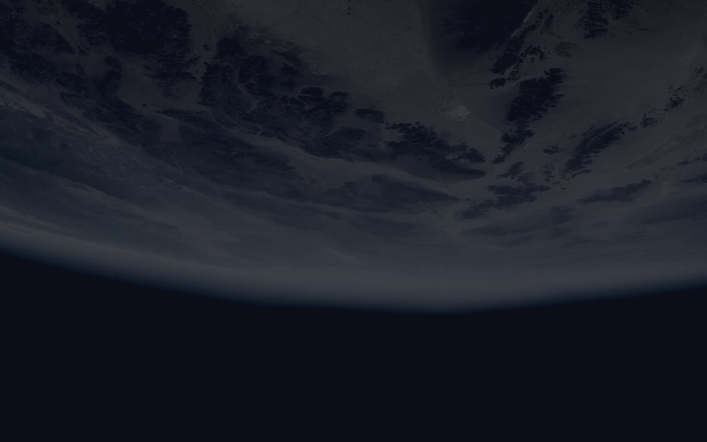

 02
02
MEET YOUR CREW
FLIGHT ENGINEER
ANOUSHEH ANSARI
Anousheh Ansari is an Iranian American engineer and co-founder of Prodea Systems. Ansari was the fourth self-funded space tourist, the first self-funded woman to fly to the ISS, and the first Iranian in space.